Actividad 2: Editores y Configuración
Configuración de Vim y Nano en OpenSUSE Tumbleweed:
Se instalan los paquetes desde el repositorio base
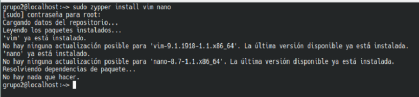Se se abre el archivo de configuración propio de Vim
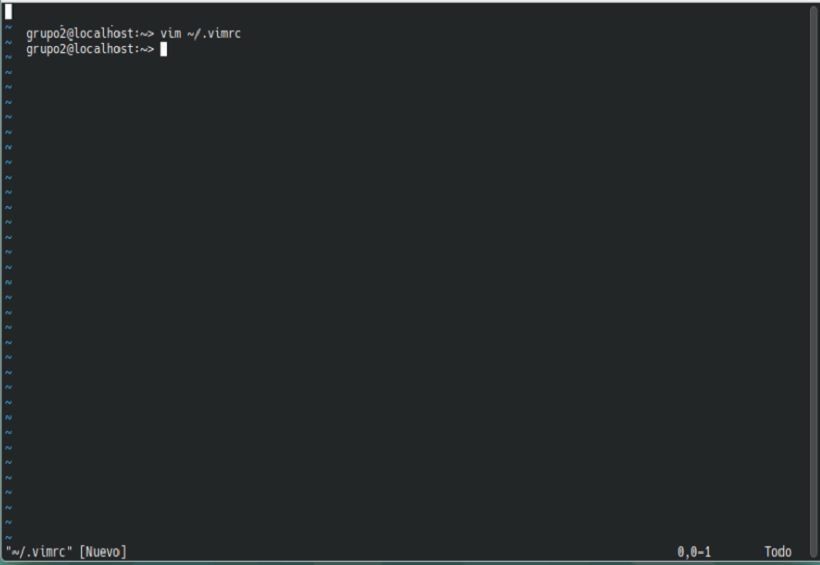Se agregan las directivas de Configuración y se guarda se sale con :wq
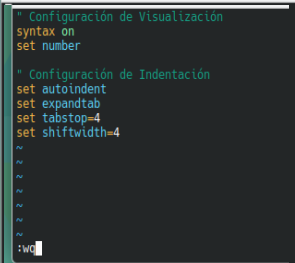Se se abre el archivo de configuración propio de Nano
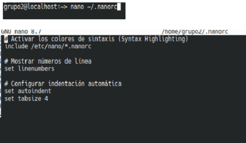Se agregan las directivas de Configuración, se guarda con ctrl O y se se sale con ctrl X

Se verifica funcionamiento en vim
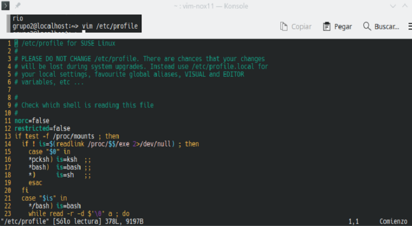Se verifica funcionamiento en nano
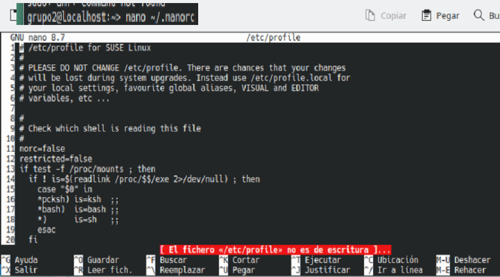Configuración de Vim y Nano en AlmaLinux:
Se instalan los paquetes desde el repositorio base
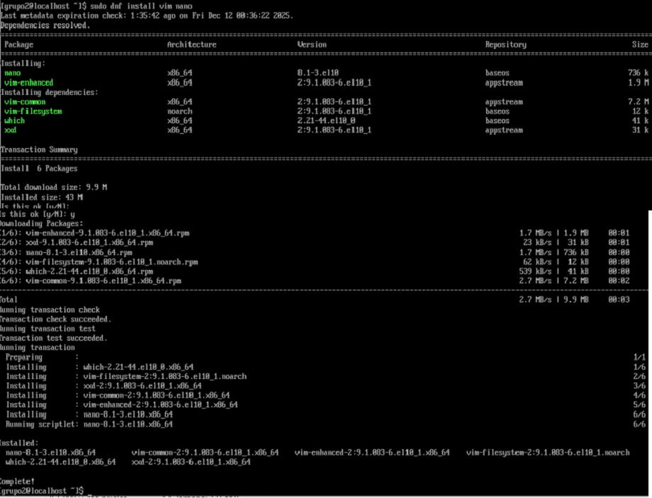Se se abre el archivo de configuración propio de Vim
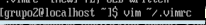Se agregan las directivas de Configuración y se guarda se sale con :wq
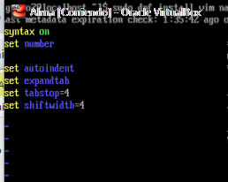Se se abre el archivo de configuración propio de Nano
Se agregan las directivas de Configuración, se guarda con ctrl O y se se sale con ctrl X
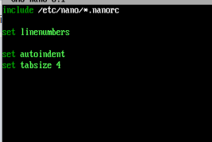Se verifica funcionamiento en vim
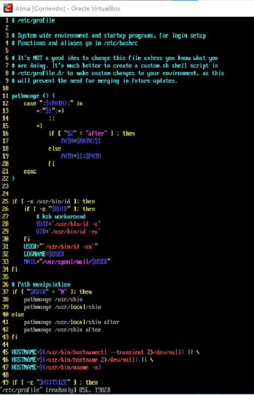